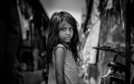
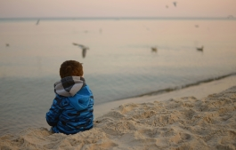

5 formas de combatir la violencia contra las niñas

¿Que te viene a la mente cuando oyes hablar de "violencia contra las niñas"? Te damos claves para detectar, denunciar y contribuir a acabar con las graesiones de una vez por todas

¿Que te viene a la mente cuando oyes hablar de "violencia contra las niñas"? Te damos claves para detectar, denunciar y contribuir a acabar con las graesiones de una vez por todas

Tras los sobrecogedores casos de violencia cometidos por niños y contra niños en Cazorla, Bilbao o Barcelona, nos preguntamos si podemos hablar de "niños criminales" y si la res puesta pnal es adecuada